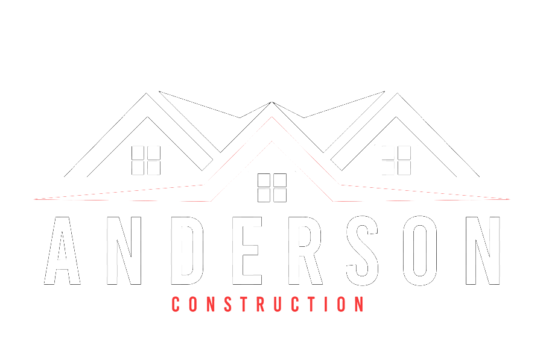

<!doctype html>
<html class="no-js" lang="zxx">
    <head>
        <meta charset="utf-8">
        <meta http-equiv="x-ua-compatible" content="ie=edge">
        <title>Construction HTML-5 Template</title>
        <meta name="description" content="">
        <meta name="viewport" content="width=device-width, initial-scale=1">
        <link rel="manifest" href="site.webmanifest">
		<link rel="shortcut icon" type="image/x-icon" href="assets/img/favicon.ico">

		<!-- CSS here -->
            <link rel="stylesheet" href="assets/css/bootstrap.min.css">
            <link rel="stylesheet" href="assets/css/owl.carousel.min.css">
            <link rel="stylesheet" href="assets/css/slicknav.css">
            <link rel="stylesheet" href="assets/css/animate.min.css">
            <link rel="stylesheet" href="assets/css/magnific-popup.css">
            <link rel="stylesheet" href="assets/css/fontawesome-all.min.css">
            <link rel="stylesheet" href="assets/css/themify-icons.css">
            <link rel="stylesheet" href="assets/css/slick.css">
            <link rel="stylesheet" href="assets/css/nice-select.css">
            <link rel="stylesheet" href="assets/css/style.css">
   </head>

   <body>
    <footer>
        <!-- Footer Start-->
        <div class="footer-main">
                <div class="footer-area footer-padding">
                    <div class="container">
                        <div class="row  justify-content-between">
                            <div class="col-lg-4 col-md-4 col-sm-8">
                                <div class="single-footer-caption mb-30">
                                    <!-- logo -->
                                    <div class="footer-logo">
                                        <a href="index.html"></a>
                                    </div>
                                    <div class="footer-tittle">
                                        <div class="footer-pera">
                                            <p class="info1">We are committed to delivering quality construction services with integrity, innovation, and precision. Building strong foundations—both structurally and in relationships.</p>
                                        </div>
                                    </div>
                                </div>
                            </div>
                            <div class="col-lg-2 col-md-4 col-sm-5">
                                <div class="single-footer-caption mb-50">
                                    <div class="footer-tittle">
                                        <h4>Quick Links</h4>
                                        <ul>
                                            <li><a href="index.html">Home</a></li>
                                            <li><a href="about.html">About</a></li>
                                            <li><a href="services.html">Service</a></li>
                                            <li><a href="contact.html">Contact</a></li>
                                        </ul>
                                    </div>
                                </div>
                            </div>
                            <div class="col-lg-3 col-md-4 col-sm-7">
                                <div class="single-footer-caption mb-50">
                                    <div class="footer-tittle">
                                        <h4>Contact</h4>
                                        <div class="footer-pera">
                                            <p class="info1">Manipay Road, Kopay, Northern Province, Sri Lanka </p>
                                        </div>
                                        <ul>
                                            <li><a href="#">Phone: +94 77 765 4321</a></li>
                                            <li><a href="#">Cell: +94 21 222 4321</a></li>
                                        </ul>
                                    </div>
                                </div>
                            </div>
                            
                        </div>
                        <!-- Copy-Right -->
                        <div class="row align-items-center">
                            <div class="col-xl-12 ">
                                <div class="footer-copy-right">
                                    <p><!-- Link back to Colorlib can't be removed. Template is licensed under CC BY 3.0. -->
  Copyright &copy;<script>document.write(new Date().getFullYear());</script> Construction Unauthorized | Developed @ <a href="https://colorlib.com" target="_blank">WEBbuilders</a>
  <!-- Link back to Colorlib can't be removed. Template is licensed under CC BY 3.0. --></p>
                                </div>
                            </div>
                        </div>
                    </div>
                </div>
        </div>
        <!-- Footer End-->
    </footer>

    <!-- JS here -->
	
		<!-- All JS Custom Plugins Link Here here -->
        <script src="./assets/js/vendor/modernizr-3.5.0.min.js"></script>
		<!-- Jquery, Popper, Bootstrap -->
		<script src="./assets/js/vendor/jquery-1.12.4.min.js"></script>
        <script src="./assets/js/popper.min.js"></script>
        <script src="./assets/js/bootstrap.min.js"></script>
	    <!-- Jquery Mobile Menu -->
        <script src="./assets/js/jquery.slicknav.min.js"></script>

		<!-- Jquery Slick , Owl-Carousel Plugins -->
        <script src="./assets/js/owl.carousel.min.js"></script>
        <script src="./assets/js/slick.min.js"></script>
        <!-- Date Picker -->
        <script src="./assets/js/gijgo.min.js"></script>
		<!-- One Page, Animated-HeadLin -->
        <script src="./assets/js/wow.min.js"></script>
		<script src="./assets/js/animated.headline.js"></script>
        <script src="./assets/js/jquery.magnific-popup.js"></script>

		<!-- Scrollup, nice-select, sticky -->
        <script src="./assets/js/jquery.scrollUp.min.js"></script>
        <script src="./assets/js/jquery.nice-select.min.js"></script>
		<script src="./assets/js/jquery.sticky.js"></script>
               
        <!-- counter , waypoint -->
        <script src="http://cdnjs.cloudflare.com/ajax/libs/waypoints/2.0.3/waypoints.min.js"></script>
        <script src="./assets/js/jquery.counterup.min.js"></script>

        <!-- contact js -->
        <script src="./assets/js/contact.js"></script>
        <script src="./assets/js/jquery.form.js"></script>
        <script src="./assets/js/jquery.validate.min.js"></script>
        <script src="./assets/js/mail-script.js"></script>
        <script src="./assets/js/jquery.ajaxchimp.min.js"></script>
        
		<!-- Jquery Plugins, main Jquery -->	
        <script src="./assets/js/plugins.js"></script>
        <script src="./assets/js/main.js"></script>
        
    </body>
</html>